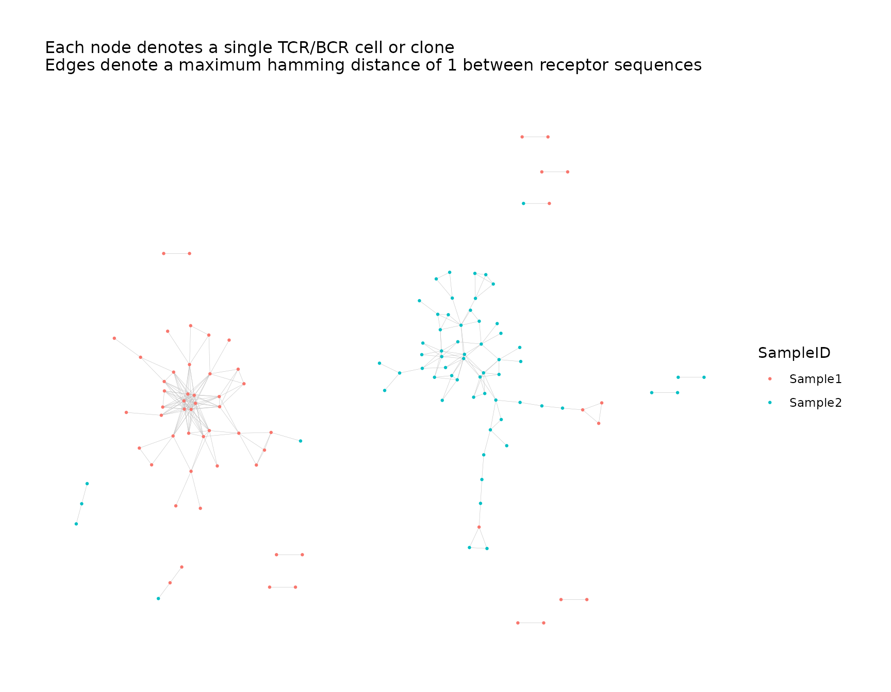
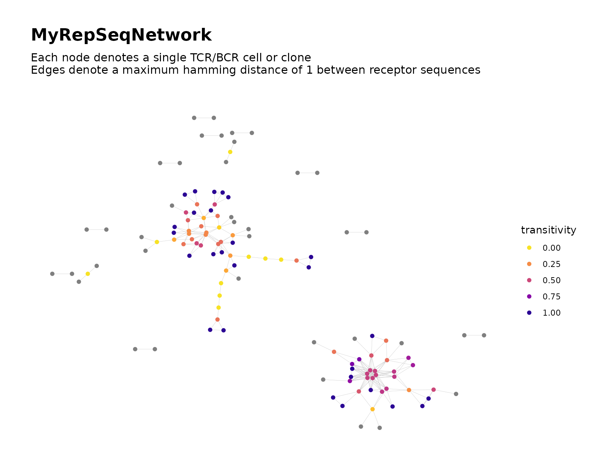
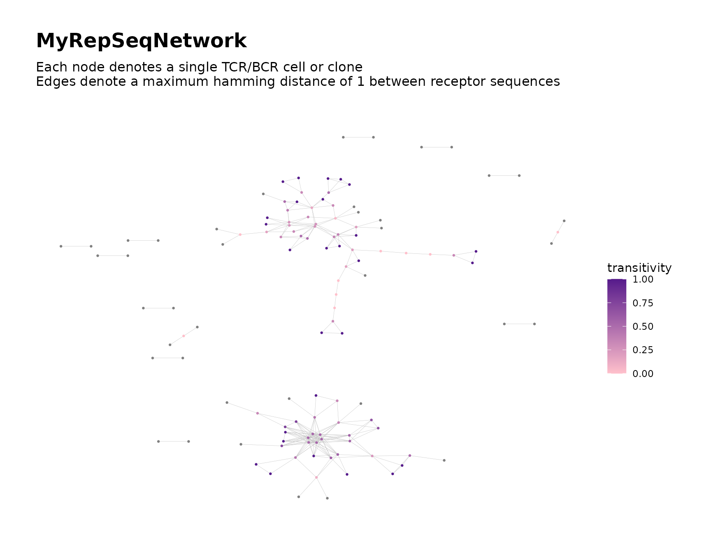
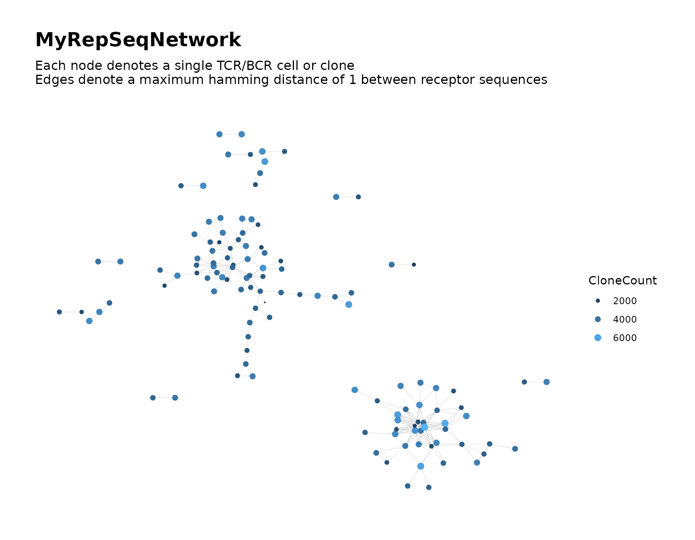
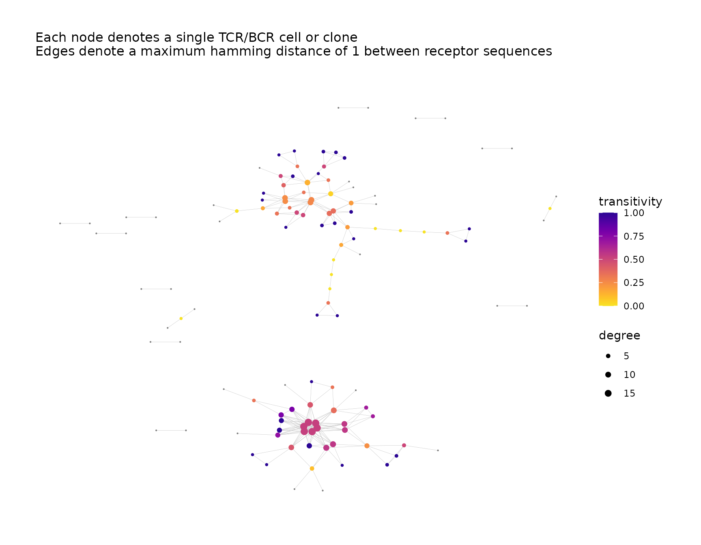

Introduction
buildRepSeqNetwork() includes various arguments that
facilitate customization of the network visualization. In this vignette,
we provide an overview and demonstration of these arguments.
Simulate Data for Demonstration
We simulate some toy data for demonstration.
We simulate data consisting of two samples with 100 observations each, for a total of 200 observations (rows).
library(NAIR)
#> Welcome to the NAIR package. Get started using `vignette("NAIR", package = "NAIR")` or by visiting https://mlizhangx.github.io/Network-Analysis-for-Repertoire-Sequencing-/
dir_out <- tempdir()
toy_data <- simulateToyData()
head(toy_data)
#> CloneSeq CloneFrequency CloneCount SampleID
#> 1 TTGAGGAAATTCG 0.007873775 3095 Sample1
#> 2 GGAGATGAATCGG 0.007777102 3057 Sample1
#> 3 GTCGGGTAATTGG 0.009094910 3575 Sample1
#> 4 GCCGGGTAATTCG 0.010160859 3994 Sample1
#> 5 GAAAGAGAATTCG 0.009336593 3670 Sample1
#> 6 AGGTGGGAATTCG 0.010369470 4076 Sample1Graph Elements
This section covers arguments that control aspects of the graph itself, such as the color and size of the nodes and the width of the edge connections.
Node Colors
Color Nodes According to Metadata
The nodes in the graph can be colored according to available
metadata. This is accomplished using the color_nodes_by
argument, which accepts a character string containing the name of a
variable.
The variable can be any variable present in the input data, as well as any node-level network properties that are computed for the network.
For example, when calling buildRepSeqNetwork(), we can
color the nodes based on the CloneCount column of the input
data by setting color_nodes_by = "CloneCount" as seen
below.
buildRepSeqNetwork(toy_data,
seq_col = "CloneSeq",
node_stats = TRUE,
color_nodes_by = "CloneCount",
output_dir = NULL
)
#> Input data contains 200 rows.
#> Removing sequences with length fewer than 3 characters... Done. 200 rows remaining.
#> Computing network edges based on a max hamming distance of 1... Done.
#> Network contains 122 nodes (after removing isolated nodes).
#> Computing node-level network statistics... Done.
#> Generating graph plot with nodes colored by CloneCount...
#> Done.If the color_nodes_by argument is left unspecified,
buildRepSeqNetwork() will attempt to use an available
variable to color the nodes. If a variable for abundance is provided
using the count_col argument, this will be used. Otherwise
the cluster_id variable will be used if it exists, followed
by degree, then by other network properties. If no suitable
options are available, the nodes will be left uncolored.
If the user does not wish the nodes to be colored dynamically, this
can be specified by setting color_nodes_by = NULL.
Change Node Color Palette
A preset color palette can be used to color the nodes by providing
the appropriate character string to the color_scheme
argument. The argument accepts the following values:
-
"default"for defaultggplot2colors - One of the following color scales from the
viridispackage. These scales are designed to maintain their perceptual uniformity (consistently across the scale, values close together appear similar, while values far apart appear distinct) when printed in grey scale or when viewed by individuals with common forms of color-blindness or color vision deficiency. More information, including images of the color scales, can be referenced in the “Introduction to the viridis color maps” vignette, linked on the CRAN page for the viridis package. For offline information, see the documentation forggraph::scale_color_viridis(). -
"magma"(or"A") -
"inferno"(or"B") -
"plasma"(or"C") -
"viridis"(or"D") -
"cividis"(or"E") -
"rocket"(or"F") -
"mako"(or"G") -
"turbo"(or"H") - Any of the above color scales with
"-1"appended, which reverses the direction of the color scale (e.g.,color_scheme = "viridis-1") - A discrete color palette from
grDevices::hcl.pals()(these can only be used if the variable used to color the nodes is discrete)
Below we show an example of using the plasma color
scheme from the viridisLite package, with the direction of
the color scale reversed:
# Using the "plasma" color scheme with reversed color gradient
buildRepSeqNetwork(toy_data,
seq_col = "CloneSeq",
node_stats = TRUE,
color_nodes_by = "transitivity",
color_scheme = "plasma-1",
output_dir = NULL
)
#> Input data contains 200 rows.
#> Removing sequences with length fewer than 3 characters... Done. 200 rows remaining.
#> Computing network edges based on a max hamming distance of 1... Done.
#> Network contains 122 nodes (after removing isolated nodes).
#> Computing node-level network statistics... Done.
#> Generating graph plot with nodes colored by transitivity...
#> Done.Use Custom Color Palette
The color scales that are available through the
color_scheme argument of buildRepSeqNetwork()
are limited to a selection of preset color scales. If the user wishes to
specify a custom color scheme for the nodes, this can be done by modifying the plot after it is created.
Node Size
Uniform Node Size
By default, all nodes are drawn at a uniform size value of 0.5. This results in the nodes appearing very small when the plot is saved using the default pdf dimensions of 12 inches wide by 10 inches tall. This default behavior is intended to prevent nodes from overlapping and obscuring edges in larger networks.
A different uniform node size can be specified by providing a numeric
value to the size_nodes_by argument. Below, we set the node
size to 1.5, which is three times as large as the default node size:
buildRepSeqNetwork(toy_data,
seq_col = "CloneSeq",
node_stats = TRUE,
color_nodes_by = "transitivity",
color_scheme = "plasma-1",
size_nodes_by = 1.5,
output_dir = NULL
)
#> Input data contains 200 rows.
#> Removing sequences with length fewer than 3 characters... Done. 200 rows remaining.
#> Computing network edges based on a max hamming distance of 1... Done.
#> Network contains 122 nodes (after removing isolated nodes).
#> Computing node-level network statistics... Done.
#> Generating graph plot with nodes colored by transitivity...
#> Done.Size Nodes According to Metadata
Rather than draw all nodes using a uniform node size, it is possible
to for the nodes to be sized according to a variable within the
node-level metadata. This is achieved by providing the column name of
the variable to the size_nodes_by argument.
The minimum and maximum node sizes can be specified using the
node_size_limits argument, which accepts a numeric vector
of length two, where the first entry is the minimum node size and the
second entry is the maximum node size.
# Size nodes dynamically by network degree; use custom size range
buildRepSeqNetwork(toy_data,
seq_col = "CloneSeq",
node_stats = TRUE,
color_nodes_by = "transitivity",
color_scheme = "plasma-1",
size_nodes_by = "degree",
node_size_limits = c(0.5, 1.5),
output_dir = NULL
)
#> Input data contains 200 rows.
#> Removing sequences with length fewer than 3 characters... Done. 200 rows remaining.
#> Computing network edges based on a max hamming distance of 1... Done.
#> Network contains 122 nodes (after removing isolated nodes).
#> Computing node-level network statistics... Done.
#> Generating graph plot with nodes colored by transitivity...
#> Done.Text Elements
This section covers arguments that control text elements in the plot, such as titles, annotations and legends.
Labeling Clusters
If cluster
analysis is performed when calling
buildRepSeqNetwork(), the output will include data on the
resulting clusters, with each cluster identified by a cluster ID.
In order to more easily reference these clusters within the visual
plot of the network graph, it is possible to label the clusters in the
plot with their cluster IDs. This must be done after calling
buildRepSeqNetwork(), and is accomplished by using the
addClusterLabels() to modify the plot contained in the
output of buildRepSeqNetwork(). Note that
buildRepSeqNetwork() returns a list, and one of the
elements of this list is another list named plots, which
contains all plots generated by buildRepSeqNetwork().
addClusterLabels() has two primary arguments. The plot
to be modified is provided to the plot argument. The entire
output list returned by buildRepSeqNetwork() is provided to
the net argument.
By default, only the 20 largest clusters by node count are labeled in
order to preserve legibility. This number can be changed by providing a
different value to the top_n_clusters argument. Instead of
prioritizing the clusters to label based on their node count, a
different variable within the cluster-level metadata can be used, so
long as the variable is numeric. This is achieved by providing the
column name of the variable to the criterion argument. The
variable should be present in the cluster_data data frame
contained in the output list of buildRepSeqNetwork().
Rather than prioritizing the clusters with the greatest values of this
variable, those with the lowest values can instead be prioritized for
labeling by setting greatest_values = FALSE.
The size of the cluster ID labels can be adjusted by providing a
numeric value to the size argument (the default is 5), and
their color can be adjusted by providing a valid character string to the
color argument (the default is "black").
addClusterLabels() assumes that the node-level metadata
includes a variable named cluster_id that records the
cluster membership of each node. This is the case when
buildRepSeqNetwork() is called with cluster analysis
enabled. If this variable has a name different from
cluster_id (e.g., if columns are manually renamed), the
correct variable name must be provided to the
cluster_id_col argument.
# Generate network, but don't print the graph plot yet
network <-
buildRepSeqNetwork(toy_data,
seq_col = "CloneSeq",
node_stats = TRUE,
cluster_stats = TRUE,
color_nodes_by = "transitivity",
color_scheme = "plasma-1",
size_nodes_by = "degree",
node_size_limits = c(0.5, 1.5),
print_plots = FALSE,
output_dir = NULL
)
#> Input data contains 200 rows.
#> Removing sequences with length fewer than 3 characters... Done. 200 rows remaining.
#> Computing network edges based on a max hamming distance of 1... Done.
#> Network contains 122 nodes (after removing isolated nodes).
#> Computing node-level network statistics... Done.
#> Computing cluster membership within the network... Done.
#> Computing statistics for the 20 clusters in the network... Done.
#> Generating graph plot with nodes colored by transitivity... Done.
# Add labels to the two largest clusters and print the plot
addClusterLabels(plot = network$plots$transitivity,
net = network,
top_n_clusters = 2,
criterion = "node_count" # (the default)
)
#> Warning: Removed 120 rows containing missing values (`geom_text()`).
Title and Subtitle
The output_name argument is used in the names of files
saved by buildRepSeqNetwork(). By default, it is also used
as the title for each plot generated by
buildRepSeqNetwork(). The default value of
output_name is "MyRepSeqNetwork".
By default, the subtitle of each plot contains information about the
settings used to construct the network, including the values of the
dist_type and dist_cutoff arguments.
A custom plot title and subtitle can be specified using the
plot_title and plot_subtitle arguments,
respectively. Either element can be omitted from the plot by supplying a
NULL value to the corresponding argument, as shown
below.
buildRepSeqNetwork(toy_data,
seq_col = "CloneSeq",
node_stats = TRUE,
color_nodes_by = "transitivity",
color_scheme = "plasma-1",
size_nodes_by = "degree",
node_size_limits = c(0.5, 2.5),
plot_title = NULL,
plot_subtitle = NULL,
output_dir = NULL
)
#> Input data contains 200 rows.
#> Removing sequences with length fewer than 3 characters... Done. 200 rows remaining.
#> Computing network edges based on a max hamming distance of 1... Done.
#> Network contains 122 nodes (after removing isolated nodes).
#> Computing node-level network statistics... Done.
#> Generating graph plot with nodes colored by transitivity...
#> Done.Legends
Excluding Size/Color Legend
By default, if the nodes are colored or sized dynamically according to a variable, a legend will be included in the plot showing the color scale and/or size scale.
The color scale can be manually excluded from the legend by setting
color_legend = FALSE. Similarly, setting
size_legend = FALSE will exclude the size scale from the
legend.
Note: An exception to the default behavior occurs
when the variable used to color the nodes is discrete with more than 20
distinct values. In this case the color scale is automatically excluded
from the legend in order to prevent it from taking up excessive space in
the plot. The name of the variable used to color the nodes is then
reported in the plot’s subtitle for reference. If the user wishes to
ignore this exception and force the color legend to be shown, they can
do so by setting color_legend = TRUE.
Legend Titles
By default, the title shown above the color scale in the legend is
the name of the variable used to color the nodes. A custom title can be
specified by providing a character string to the
color_title argument. Similarly, the default title for the
size scale is the name of variable used to size the nodes, and a custom
title can be specified using the size_title argument. Each
of the color_title and size_title arguments
can also be set to NULL in order to omit the respective
title.
If a vector is provided to the color_nodes_by argument
in order to generate multiple plots, then
the color_title will accept a character vector of matching
length, where each entry is the title for the color legend in the
corresponding plot.
Generate Multiple Plots of a Network
The buildRepSeqNetwork() can generate multiple plots of
the same network graph, with each plot coloring the nodes according to a
different variable. This is accomplished by providing a vector of column
names to the color_nodes_by argument instead of a single
column name.
A different color palette can be used for
each plot. This is achieved by providing a character vector to the
color_scheme argument. This vector must have the same
length as the vector provided to the color_nodes_by
argument. The color palette specified by each entry will be applied to
the corresponding plot. If, instead, a single value is provided to the
color_scheme argument, the specified color palette will be
applied to all of the plots.
network <-
buildRepSeqNetwork(toy_data,
seq_col = "CloneSeq",
node_stats = TRUE,
color_nodes_by = c("transitivity", "CloneCount"),
color_scheme = c("plasma-1", "default"),
size_nodes_by = "CloneCount",
node_size_limits = c(0.1, 2.5),
output_dir = NULL
)
#> Input data contains 200 rows.
#> Removing sequences with length fewer than 3 characters... Done. 200 rows remaining.
#> Computing network edges based on a max hamming distance of 1... Done.
#> Network contains 122 nodes (after removing isolated nodes).
#> Computing node-level network statistics... Done.
#> Generating graph plot with nodes colored by transitivity...#> Done.
#> Generating graph plot with nodes colored by CloneCount...
#> Done.Both plots are stored in the plots list, which is
contained within the output list of
buildRepSeqNetwork().
names(network$plots)
#> [1] "transitivity" "CloneCount"Each plot is named according to the variable used to color the nodes.
Downstream Tasks
This section covers functionality within the NAIR
package that facilitates additional visual analysis of the results from
buildRepSeqNetwork().
Modifying Plots After Creation
Motivation
In some cases, the user may wish to make changes to a plot that was
previously created by buildRepSeqNetwork().
For example, suppose we call buildRepSeqNetwork() in
order to construct the network for our simulated data:
output <- buildRepSeqNetwork(toy_data, "CloneSeq",
node_stats = TRUE,
output_dir = NULL
)
#> Input data contains 200 rows.
#> Removing sequences with length fewer than 3 characters... Done. 200 rows remaining.
#> Computing network edges based on a max hamming distance of 1... Done.
#> Network contains 122 nodes (after removing isolated nodes).
#> Computing node-level network statistics... Done.
#> Generating graph plot with nodes colored by degree...
#> Done.Now suppose we wish to modify the plot seen above. We could call
buildRepSeqNetwork() again, using the appropriate arguments
to customize the plot as desired. However, this would involve
reconstructing the network, which is unnecessary for our purposes and
could take substantial time if the network is very large.
Another option is to directly modify the plot contained within the
already-existing output of buildRepSeqNetwork().
How to Modify Plots
The list that was returned by buildRepSeqNetwork()
contains a sublist named plots:
names(output$plots)
#> [1] "degree"Each plot created by buildRepSeqNetwork() is contained
in this list, with each plot named according to the variable used to
color the nodes. Here the list contains one plot named
degree.
Each plot exists as an object of class ggraph from the
ggraph package. The ggraph class inherits the
structure of the ggplot class from the ggplot2
package. Each plot can therefore be modified using ggplot2
functions and syntax, for which many excellent informational
resources are available.
The ggraph class extends the ggplot class
through the addition of graph-specific geoms and layouts. The plots
produced by buildRepSeqNetwork() use the geoms
geom_edge_link0() for the edges and
geom_node_point() for the nodes.
As a demonstration below, we remove the plot title and subtitle,
adjust the node size, color the nodes using the CloneCount
variable and change the color scale.
library(ggraph)
#> Loading required package: ggplot2
# modify plot
modified_plot <- output$plots$degree +
# remove title and subtitle
labs(title = NULL, subtitle = NULL) +
# adjust node size and node color variable
geom_node_point(
aes(color = output$node_data$CloneCount), size = 1.5) +
# change legend title for node color
guides(color = guide_legend(title = "Clone Count")) +
# change color scale
scale_color_viridis(option = "plasma", direction = -1)
modified_plot
We can replace the original plot contained in the output of
buildRepSeqNetwork() with the modified plot. If the
variable used to color the nodes has been modified, we can also rename
the plot accordingly.
# replace original plot with modified plot
output$plots$degree <- modified_plot
# rename plot according to new node color variable
names(output$plots) <- "CloneCount"Alternatively, we can keep the original plot and add the modified
plot to the plot list contained in the existing output of
buildRepSeqNetwork().
# add modified plot to list containing the original plot
output$plots$CloneCount <- modified_plot
names(output$plots)
#> [1] "degree" "CloneCount"The complete set of functions, geoms and aesthetics within the
ggraph and ggplot2 packages allow the user to
customize plots beyond what is possible using only the arguments of
buildRepSeqNetwork().
Custom Color Scales
The color scales that are available through the
color_scheme argument of buildRepSeqNetwork()
are limited to a selection of preset color scales. If the user wishes to
manually customize the color scheme for the nodes, this can be done by
modifying the plot after it is created.
For Continuous Variables
If the variable used to color the nodes is continuous, a custom color
gradient can be specified using scale_color_gradient(),
which allows the user to specify the color at each end of the gradient
using the arguments low and high. Below, we
use buildRepSeqNetwork() to generate a plot where the nodes
are colored using the CloneCount variable. We then modify
the plot to use a custom color gradient.
# generate plot with nodes colored by clone count
output <- buildRepSeqNetwork(toy_data, "CloneSeq",
color_nodes_by = "CloneCount",
size_nodes_by = 1.5,
print_plots = FALSE,
output_dir = NULL
)
#> Input data contains 200 rows.
#> Removing sequences with length fewer than 3 characters... Done. 200 rows remaining.
#> Computing network edges based on a max hamming distance of 1... Done.
#> Network contains 122 nodes (after removing isolated nodes).
#> Generating graph plot with nodes colored by CloneCount... Done.
# modify plot to use custom color gradient; replace original plot
output$plots$CloneCount <- output$plots$CloneCount +
scale_color_gradient(low = "pink", high = "purple4")
output$plots$CloneCountFor Discrete Variables
If the variable used to color the nodes is discrete, a custom color
palette can be specified using the scale_color_manual()
function, which allows the user to specify the color used for each value
of the discrete variable. The argument values accepts a
vector of colors whose length must match the number of unique values in
the discrete variable. Below, we use buildRepSeqNetwork()
to generate a plot where the nodes are colored using the
SampleID variable. We then modify the plot to use a custom
color palette.
# generate plot with nodes colored by sample ID
output <- buildRepSeqNetwork(toy_data, "CloneSeq",
color_nodes_by = "SampleID",
size_nodes_by = 1.5,
print_plots = FALSE,
output_dir = NULL
)
#> Input data contains 200 rows.
#> Removing sequences with length fewer than 3 characters... Done. 200 rows remaining.
#> Computing network edges based on a max hamming distance of 1... Done.
#> Network contains 122 nodes (after removing isolated nodes).
#> Generating graph plot with nodes colored by SampleID... Done.
# modify plot to use custom color palette
output$plots[[1]] + scale_color_manual(values = c("deepskyblue", "red2"))Generating New Plots
In some cases, rather than modifying an existing plot, the user may wish to generate an entirely new plot of the same network graph. For example, it may be the case that the user wants to keep their existing plots, but also wants additional plots with the nodes colored according to new variables not used in any of the current plots.
While new plots can be generated by calling
buildRepSeqNetwork() again, the user may wish to avoid
reconstructing the same network, which is redundant and could be
time-consuming for large networks.
Instead, new plots can be generated using
generateNetworkGraphPlots() in combination with the
existing output of buildRepSeqNetwork(). The function’s
first and second arguments accept the igraph and
node_data objects, respectively, that are contained in the
output list of buildRepSeqNetwork().
The remaining arguments of generateNetworkGraphPlots()
are used to customize the plot and behave identically to those of
buildRepSeqNetwork() covered in this vignette.
generateNetworkGraphPlots() can be used to generate
multiple plots in a similar fashion to buildRepSeqNetwork()
by supplying a vector of column references
to the color_nodes_by argument.
The function returns a list containing one item for each plot. By default, the plots will also be printed to the plots pane in R.
# Generate new plots using previous output of buildRepSeqNetwork
new_plots <-
generateNetworkGraphPlots(igraph = output$igraph,
data = output$node_data,
color_nodes_by = c("CloneCount", "CloneSeq"),
color_scheme = c("default", "turbo"),
size_nodes_by = 1
)
#> Generating graph plot with nodes colored by CloneCount...#> Done.
#> Generating graph plot with nodes colored by CloneSeq...#> Done.By default, plots generated using
generateNetworkGraphPlots() do not have a title or
subtitle. These can be set using the plot_title and
plot_subtitle arguments, respectively.
The new plots can be added to the original list of plots by appending
the list returned by generateNetworkGraphPlots().
Saving Plots
After making changes to the list of plots contained in the output of
buildRepSeqNetwork(), such as replacing a plot with a
modified version or adding new plots to the list, the user may wish to
save the plots to a pdf file.
This can be conveniently accomplished by passing the list of plots to
saveNetworkPlots() and specifying a file path for the pdf
file using the outfile argument. All of the plots in the
list will be saved to a single pdf.
saveNetworkPlots(output$plots,
outfile = file.path(dir_out, "plots.pdf")
)
#> Network graph plots saved to file:
#> /tmp/RtmpauotER/plots.pdf